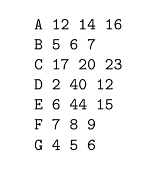
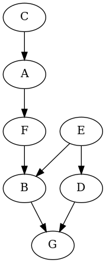
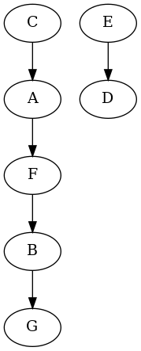

Demonstrating Partial Order Relations in students’ marks¶
This application gives the ranking of a class of students based on their marks in each subject.
File format¶
It takes a file which contains the marks of students in the following manner :
It rates a particular student better than another only if he/she has scored more marks than the latter in all subjects. If he secured all marks less than the latter, the latter is rated as better.
Transitivity in the relationship¶
This relationship is transitive i.e if A ‘is better than’ B and B ‘is better than’ C, then A ‘is better than’ C. To state the relation mathematically:
If A > B and B > C, then A > C.
To maintain the transitivity, we find the pair of students who have other students between them in ranking and delete such pairs. Thus, our final list only consists of pairs who are immediately after one another.
Partial Order Relations¶
If a particular student has some marks (not all) greater than another student, then there is no relationship between the 2 students.
The application maintains both the transitive and partial order property in the marks of students.
Since we are using graphs to show the partial relationship, such pairs also belong to the list and are finally arranged by the create_png().
Representing the Partial Order Relations¶
The application represents these relationships using a graph, wherein all the vertices are students. In this graph 2 vertices form an edge only if there is a relationship between the 2 students’ marks. It is a directed graph where the better student is directed towards the other student.
Note
Note that, this graph may not be a connected graph i.e it may have more than 1 connected component. This is from the fact that 2 vertices are only connected if there is a relationship betweeen them.
There can be a cycle in the graph i.e if a student is related 2 other students.
I have used Graphviz as a tool to visualize the graphs as an output.
The graph for the above file is:
To sum up..¶
To see the code fork this repository.